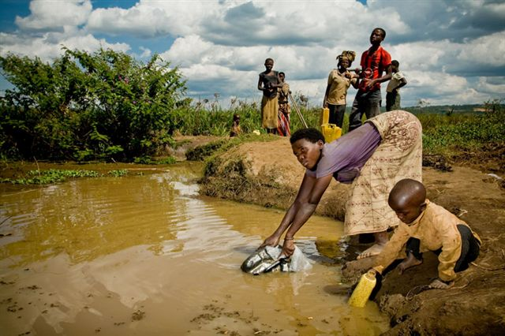

The State Minister for Social Affairs, Dr Alvera Mukabaramba, welcomed the findings, noting that they will help the Government in fighting corruption. She said e-services and protection of whistle-blowers are among the new mechanisms being used to fight graft.